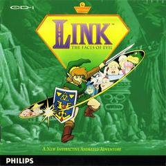

Link: The Faces of Evil ist ein CD-i-Spin-off, das außerhalb der Hauptreihe entstand. Die Spiele dieser Lizenzära sind hauptsächlich für ihre experimentellen Full-Motion-Video-Ansätze und ihre inkonsistente Spielqualität bekannt. Sie sind eher historische Kuriositäten als kanonische Kapitel der Serie.
| Titel | Link: The Faces of Evil |
| Veröffentlichung | 1993 (NA/Others) |
| Plattform | Philips CD-i |
| Entwickler | Animation Magic / Philips |
| Produzent | Philips (Lizenz) |
| Komponist | Various |
Als Lizenz-Spin-off unterscheidet sich Faces of Evil stark in Design und Ausführung: Full-Motion-Video-Sequenzen und seitlich scrollende Abschnitte dominieren. Die Level sind stärker linear und actionorientiert, die Steuerung gilt als träge, und das Spiel fokussiert mehr auf Präsentation als auf die typische Zelda-Puzzle-Tiefe. Canon-Relevanz fehlt; das Spiel ist historisch interessant als Beispiel für Markenlizenzierung und FMV-Ära.